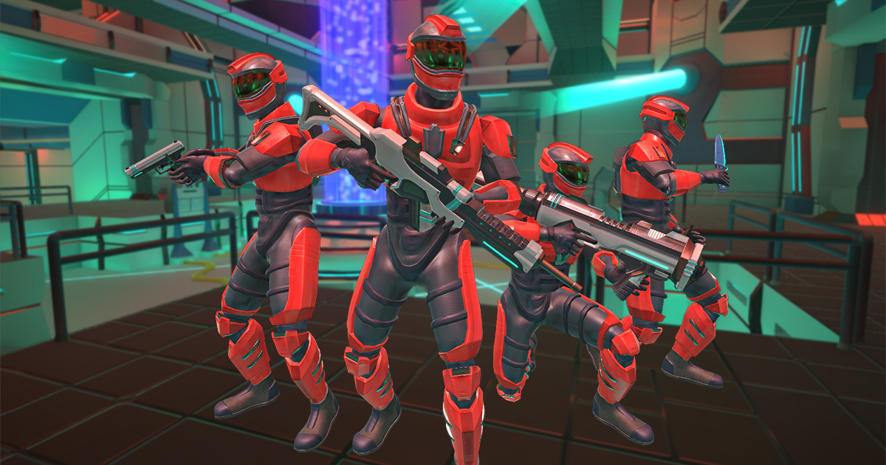
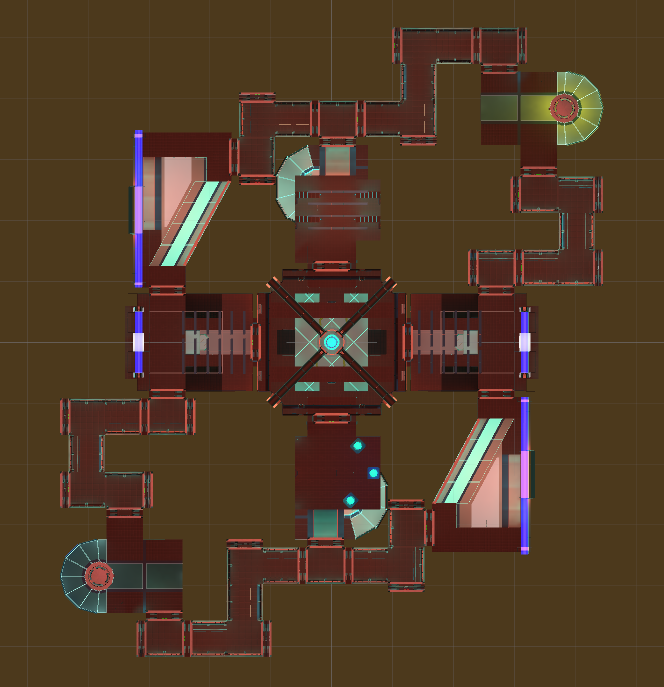
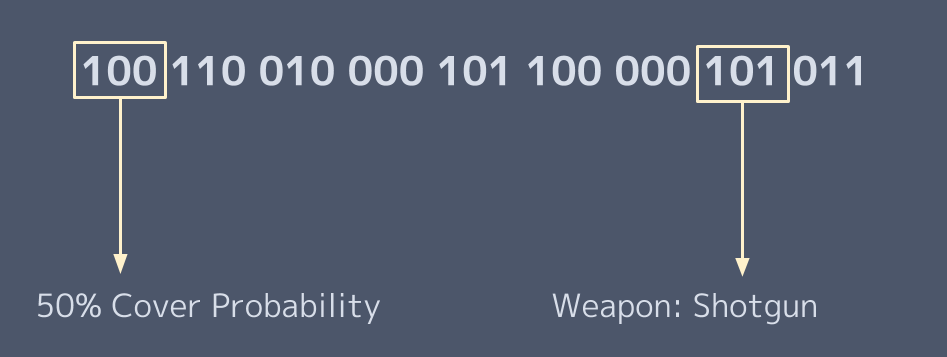
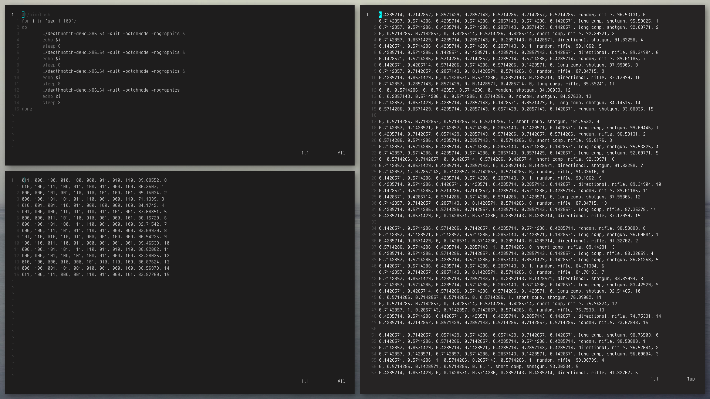
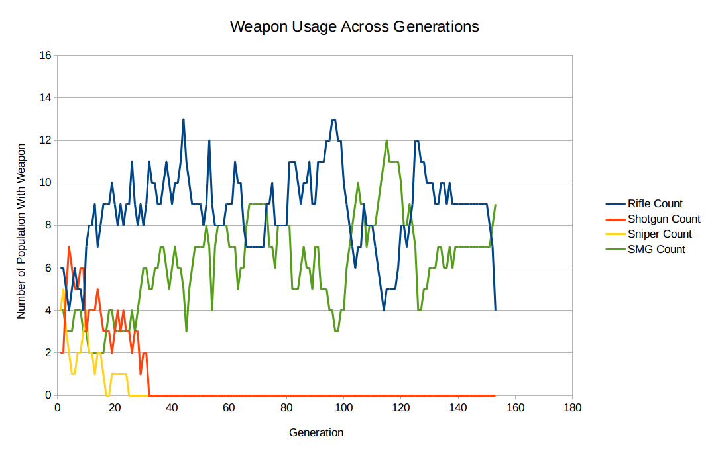
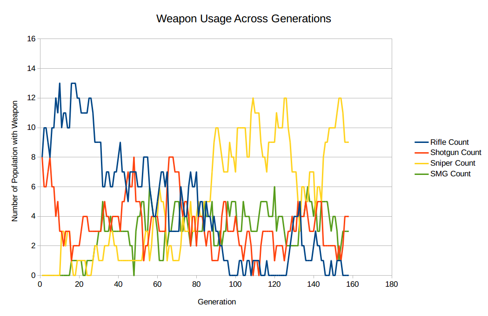
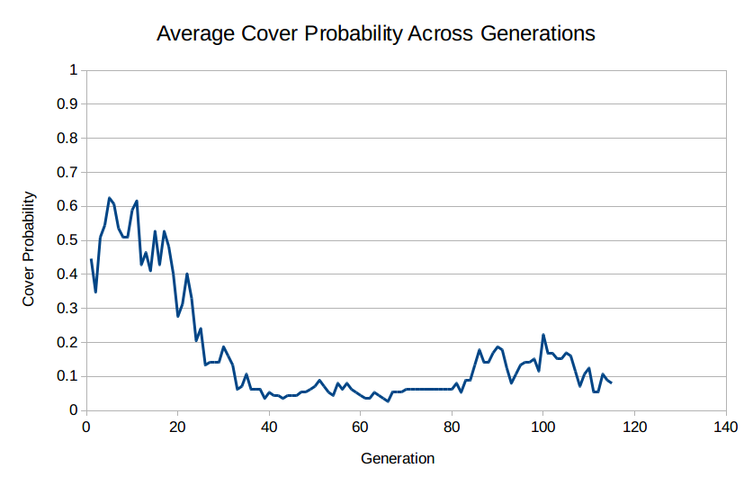
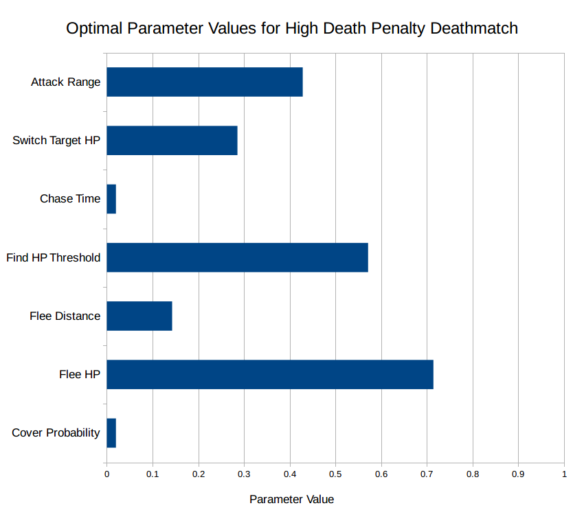
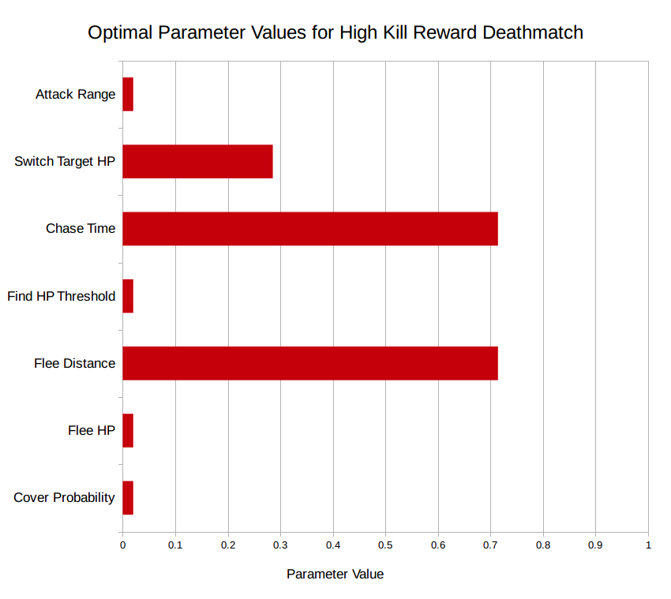

Genetic Algorithms in Game Testing
This was done by myself under the supervision of Steve Engels as my final computer science project at the University of Toronto
One of the reasons that balancing a game is so difficult is that it requires a lot of game testing and user feedback to identify problems, which can be expensive and time consuming. Actually fixing the problems in a game's mechanics requires in depth knowledge of the game, which can be biased as the developer has a different perspective of it than the end user.
What we propose to help deal with these difficulties is fairly simple conceptually; let AI agents play the game, with natural selection determining their behaviour traits. Eventually, local optimum AI parameters will emerge, which is already useful in itself, but going through this process also provides valuable data that can be used to analyze the AI, game mechanics, and levels.
The Testing Environment
The ideal canditate for our testing environment would be a simple deathmatch game with AI player implementation, all with accessible source code. Deathmatch works well for a genetic algorithm since the environment is perfectly suited for natural selection, and having access to the source code is required to implement the algorithm as the AI has to be modified. Luckily, we found just what we were looking for in the Deathmatch AI Kit from the Unity Asset Store.
The Deathmatch AI Kit by Opsive features a single map, a behaviour tree visual scripting tool, and a simple implementation of a third-person deathmatch shooter with AI opponents. While not as good as having an established game to work with, it would do for a proof-of-concept.
Setup
The next step was to implement the genetic algorithm. First, we looked for parameters in the behaviour tree of the AI that could be adjusted, as well as implementing some new parameters:
- Cover Probability: Probability that the agent camps in cover for some amount of time when passing by a cover point
- Flee HP Threshold: If the agent's health is below this threshold, they will flee from the attacker
- Flee Distance: If the attacker is beyond this distance threshold, the agent will flee
- Find HP Threshold: If the agent's health is below this threshold and they are not being attacked, they will search for a health pack
- Attack Range: The distance the agent will try to keep from its target while attacking
- Patrol Type: If the agent is not in combat or looking for health, they will use one of these policies to patrol the map
- Random: Randomly patrol the map
- Directional: Patrol the map in a pre-determined path
- Long Camp: Stay on the platforms overlooking the central area of the map
- Short Camp: Wait for enemies by the health packs in the outer parts of the map
- Weapon: This determines which weapon the agent will start with. They will only use this weapon.
- Shotgun
- SMG
- Assault Rifle
- Sniper Rifle
All of these parameters need to be encoded into "chromosomes", so that when an agent is given this chromosome, their parameters will be set in accordance. Each parameter is represented by a 3-bit number, which is expressed differently depending on the parameter. For example, health threshold values are in the range 0 - 100, and weapons are mapped explicitly to certain bit values.
Together, all of the parameters make up a 27-bit chromosome.
Once we had chromosomes, it was time to implement selection and crossover to complete the algorithm. More specifically, we used a version of the CHC genetic algorithm which worked better for smaller populations.
- Initialize Population: 32 chromosomes are generated randomly, which serves as the initial population
- Evaluation: 4 games of deathmatch are played, each with 8 agents receiving a chromosome to determine their parameters. At the end of each game, the agents' scores are linked to their chromosomes.
- Crossover: Chromosomes are paired randomly to produce 2 offspring for each pair. The new chromosomes are created by exchanging half of the non-matching bits of their parents.
- Evaluation: The new child population is evaluated.
- Selection: The child population and the parent population are sorted by score, and the bottom half of chromosomes are eliminated. This becomes the new parent population.
Steps 4 and 5 are then repeated until the population converges (ie. there is little variation in the population), at which point the algorithm restarts with the initial population being generated by flipping 35% of the bits of the highest scoring chromosome.
Implementation Details
All of the data structures and logic behind the genetic algorithm was implemented in the Unity game engine using C# as the scripting language, except for getting multiple instances of the game to communicate with each other. The reason for having multiple games running at once was to increase the population, as fitting more agents into a single game would make the small map too crowded, influencing the results.
To do this, we had each game log information into text files. At each iteration, 4 games would start, and they pull from the pool of unevaluated chromosomes to populate the map. The shell script responsible for running the games would not start the next batch of games until all of the games in the current batch had finished running.
Running the Tests
The algorithm would run games until we decided to stop it. Since it took anywhere from 3 to 5 hours for some sort of convergence to happen, we would typically just let it run overnight. This was eventually sped up by running it in a no-graphics mode, and accelerating the game time. Usually we would get through 100 - 200 generations before we stopped running a test.
The results were collected in the form of a large CSV file which was filled with the current population's parameters and fitness at each iteration. This allowed us to see the entire evolutionary history as the optimal parameter configurations emerged.
In the image above, we have the script that runs the games (top left), the file containing the parameters of each generation's population (right), and the current population's chromosomes and fitness (bottom left)
Results
Running the genetic algorithm pointed out a lot of problems in game balance. Most of this had to do with the weapons, which we added ourselves. The reason for adding new weapons was that the weapons already in the Deathmatch AI Kit were not conducive to the agents expressing different play styles, since there was only an assault rifle and a rocket launcher pick-up on the map. We added the SMG, shotgun, and sniper rifle in the hopes that different parameter configurations would emerge for different weapons. Unfortunately, our manually balanced weapon damage values tended to make one or two weapons much better than the rest, causing the algorithm to converge on these weapon choices too quickly.
In the case of a multiplayer shooter, we wouldn't want picking the best weapon to be such an easy choice. If the weapons were balanced, the algorithm should converge on a weapon choice at a much slower rate, or not at all.
To remedy this, we implemented an automated weapon balancing system that would adjust the weapon damage values if one weapon choice made up a significant portion of the population. This succeeded in enforcing a diversity of weapon choices, making for a more balanced game.
Another insight into the game due to the genetic algorithm was that the agents' use of cover was highly flawed. This was discovered when we noticed that in every test we had run, the cover probability paramter quickly converged toward 0, even when we modified the fitness function to heavily incentivize staying alive.
As it turned out, the cover action that was implemented by Opsive (the creators of the Deathmatch AI Kit), was so slow that it was detrimental to ever take cover at all. In addition, none of the cover points on the map actually hid the whole body of a player. This would have been very difficult to notice by just observing gameplay without knowing what to look for, so the utility of running the genetic algorithm to diagnose these problems is clear.
The last important result is from something that was not discovering game balance issues, but rather a bit of validation that the genetic algorithm would find different gameplay strategies for the agents based on changes to the game's rules. We ran two tests, each with different fitness functions, hoping to incentivize an aggressive play style in one and a defensive play style in the other.
 The results are as expected, which shows that this method of tuning AI agents can serve as a simulated player population that responds to changes in game mechanics, providing useful data to be considered in the game testing process.
Polybar Terminal Tabs
I put this project up on my GitHub after one of my GNU/Linux desktop environment customization sessions got a little out of hand, and I realized I had created something that other people may actually want to look at.
What is it?
I like to keep my desktop environment as minimal as possible, which is why I use a tiling window manager (specifically bspwm). Instead of clicking through menus and icons, then dragging windows around, I prefer to have my frequently used programs bound to keyboard shortcuts, and everything else is done through the command line or terminal applications. I noticed that there were a few terminal applications I opened up almost every time I used my computer, so I decided to bind those to keyboard shortcuts as well. However, there was a problem with this.
There only ever needed to be one instance of these applications open at a time, and having to remember which workspace I put my calendar in was a bit too much trouble for me. So, I tied these terminal windows to the status bar in a tab system and all my problems were solved.
In the GIF above, you'll notice a bar on the bottom. This is Polybar, a minimal but highly customizable status bar for GNU/Linux, which was created by jaagr. The other key to making this system work is tdrop, which can hide/show terminal windows and will follow to different workspaces.
How it works
Polybar has some commands that allows the user to interact with it through IPC. This allows the icons in the bar to serve as buttons, so the command that my script sends basically tells an icon to change color hide/show the associated terminal window.
Most of the work comes from keeping track of terminal windows. This is where tdrop comes in, which allowed me to assign an ID to each terminal window, and all I had to do after that was write a script that reads and writes to a file that keeps track of which windows are opened. Once this was done, it was a simple task of determining which command to send to Polybar based on which windows were open and which button was pressed.
To see the scripts, take a look at the GitHub repository.
Slice of Life
In the summer of 2017, I worked on a research project at the Kingston General Hospital, which had me creating a data analysis tool specifically for analyzing the flow of patients coming in and out of the emergency room at the hospital.
The Project
The main idea behind the project was to model patient flow through the emergency department using concepts from traffic engineering. By collecting some metrics at each segment of time throughout the day, we can calculate these traffic flow parameters:
- Flow: The number of patients traversing the care segment per unit time.
- Density: The number of patients present in the care segment at a given time.
- Travel Time: Length of stay or wait time in a given care segment.
Since a patient will pass through multiple care segments, their entire journey through the emergency department will contribute to these metrics, resulting in a model from which useful statistics can be extracted.
The Program
Given 3 years worth of raw patient data, my task was to write a program that does the following:
Input:
- CSV file of patient records
- Care segments of interest
- Time slice length
- Filter criteria
Output:
- CSV file where each row contains the traffic flow statistics for a time slice, and only the patients that were in the selected care segment during this time are included in these calculations.
- Various plots generated from these statistics
I wrote this program in Python, using the tkinter module as a GUI, and the pandas python data analysis library to extract statistics that would be put into the plots. The reason the program included a GUI was because it was used by another person working on the project who was a data analyst but not a programmer, and because of this I had to consider how to make the program understandable and usable by someone like this. In addition, the part of the program that generated plots was perfect for creating the report and poster since it allows the user to view it in the window and then decide whether or not to save it.
For more details, take a look on GitHub.